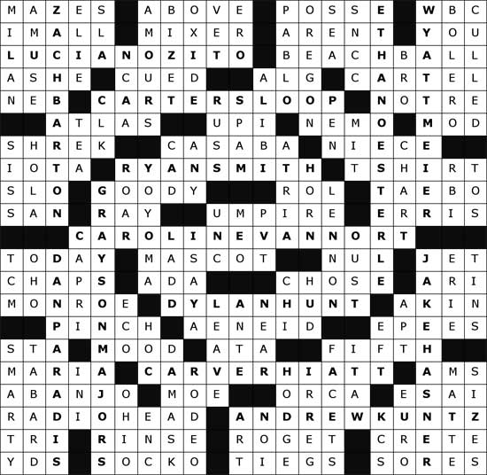
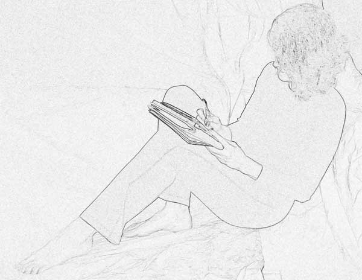

Why is a toast so moving? The speaker conveys a rich knowledge of the toastee, and we hear the care that went into selecting the words. Like a well-done toast, few other gifts are as personal and specific as a custom crossword puzzle. Consider a custom crossword for a ...
The modern crossword puzzle first appeared in 1913, and was a national craze by the 1920s. They are still a fixture of American culture. Most major newspapers carry at least one daily puzzle, and they are enjoyed by people of all ages and backgrounds. The news is full of articles advocating mental exercise for the brain.* Whether or not crosswords help the brain stay young, they are fun and educational for the solver. Not So Simple The crosswords you see in books and newspapers meet exacting standards for symmetry and composition. Those who solve crosswords regularly have an intuitive understanding of these rules, but may not realize all that goes into a puzzle’s construction. For additional information and resources, visit www.cruciverb.com * “Put Your Mind To It,” Washington Post, January 2, 2007
Your puzzle will meet American crossword standards. It will be like the crossword in your local newspaper, except that it has content that you specify. Our puzzle will be created together. You must supply information so I can customize the puzzle. We will finalize the custom content together. And, you will have a chance to review the puzzle before it is delivered. Your puzzle is an original work. You may use and reprint the puzzle as often as you like, provided that the puzzle is not modified or resold in any form. You will receive:
Options and Pricing
Follow these simple steps to order your puzzle.
Here are some common questions about Give a Crossword custom puzzles. Is my puzzle generated by a computer? Your puzzle is generated by a PERSON who uses software to help place words in the grid. The software reduces the time it takes and therefore the cost of the puzzle, but the soul of the puzzle is in the input you provide, and in the choices I make during its design. Why can’t more personalized words be included? Unlike a Scrabble-style puzzle, the crossword format produces a tightly meshed grid that limits the number of possible solutions. This is the magic of a crossword, since any clue can be solved by solving the clues of the crossing words. But it also makes complete customization effectively impossible. The words I don’t specify, where do they come from? I place your content on a grid and build the puzzle around it. Where possible, I select words that are meaningful to your audience. Words I use are in the dictionary or in common language, and I design the puzzle so that these words are 1) as interesting and lively as they can be, and 2) have clues that your solver(s) are likely to enjoy. Will I get a chance to provide input? Yes. The questionnaire you complete when you order your puzzle is the first step in our partnership. We may correspond again to finalize the puzzle’s theme, and you will have the opportunity to preview your puzzle. How is pricing determined? It takes many hours to craft a customized crossword puzzle. Pricing is based on the time it would typically take to create a puzzle of a certain size and level of difficulty and customization. Ironically, creating a puzzle that is easier to solve actually takes more time. How long does it take? The minimum time is two weeks; that depends on what else is in queue and how prepared you are with your input. Order as early as you can. The 21x21 square puzzle below was created for two preschool teachers (one of them an avid puzzler) and the class parents. It contains the names of the children in the class, with clues that are unique for each child.  The custom content of this puzzle is shown in bold type (student names). Some sample clues:
In addition to the names of the students, I included words relevant to the audience, such as BEACH BALL, NEMO, SHREK, T SHIRT. Also, because a teacher was a Virginia Tech fan, I clued MASCOT as “HokieBird, for one.” Elizabeth Hinshaw has been solving crosswords for as long as she can remember, and has been constructing them professionally since 2005. Her puzzles have appeared in the New York Times and in newspapers across the country that subscribe to the Times puzzle syndicate. She donates 5% of proceeds to nonprofit organizations.  |
© 2008, Elizabeth Hinshaw and Associates. All Rights Reserved. |